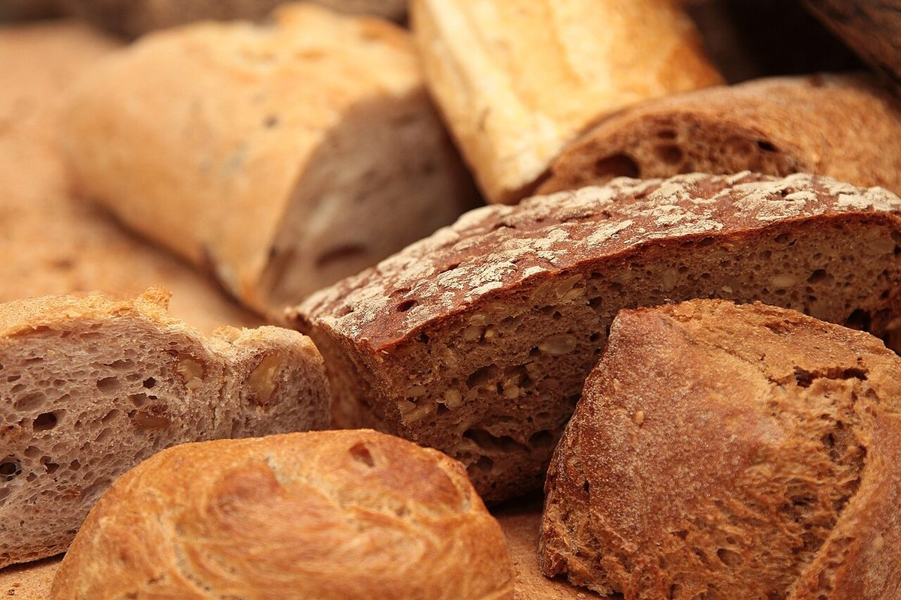
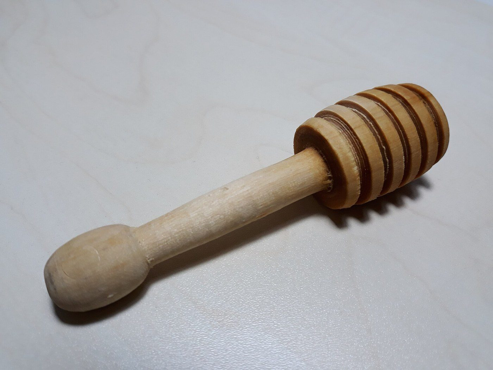
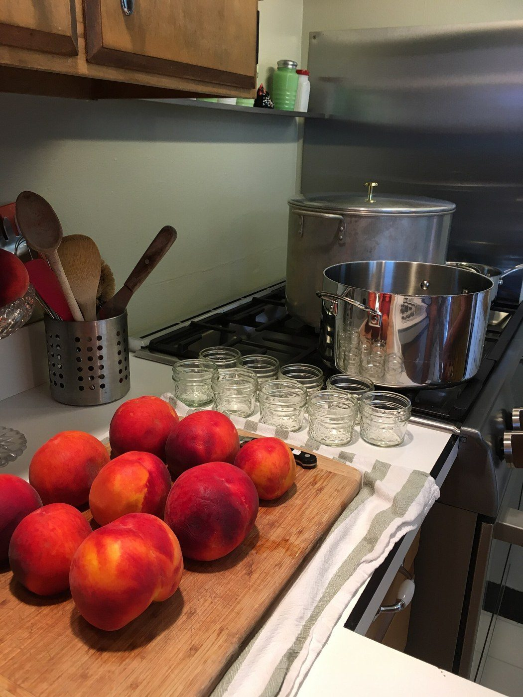

山形県長井市本町・テナントミックス施設
いろんな挑戦が、
まちなかの広場でまじわる。
cross-ba(クロスバ)は、長井市本町の商店街に生まれた、お店・オフィス・交流広場が一体になった場所です。
お店の由来・想い
商店街の若い店主たちが、つくった場所。
cross-baを運営するのは、商店街の経営者や建築家らが設立した、民間出資100%のまちづくり会社「俺たちの株式会社楽街」です。商店街前の道路拡幅工事をきっかけに店舗が減った状況を打開しようと、本町大町通り商店街でこの施設の整備・運営を始めました。
商業機能・オフィス機能・交流広場が一体となった複合拠点で、創業意欲のある若者の挑戦を促し、まちなかの活力を生み出すことを目指していると紹介されています。庭園やベンチのある憩いの空間をつくり、道の駅や長井駅との回遊性を高める狙いもあるとのことです。2018年5月には完成披露会が開かれました。
カフェやパン店などが入居し、起業を目指す人のためのチャレンジショップ(C棟)の出店者募集も行われています。
情報源: 中小機構 東北セミナー事例紹介(2022年)/山形新聞(2026年1月)/やまがたぐらし(2026年2月)/Instagram
「cross」という名前の意味づけは確認できていません。「いろんな挑戦がまじわる」という見出しの言い回しは、制作側のイメージです。


ご利用いただけるもの
お茶と焼き菓子と、立ち寄る時間。
施設内にはカフェやパン店などが入っています(例: 1階のパン店が週1回カフェ営業をしているとの紹介記事があります)。各店の営業時間・メニュー・価格は変わることがあるため、ここでは掲載せず「準備中」としています。
パン・焼き菓子
焼きたてのパンや、素朴なお菓子との出会い。
準備中
お茶・コーヒー
歩き疲れたら、ベンチやカフェで一息。
準備中
チャレンジショップ
これから起業する人の、はじめの一歩の場。
準備中
写真は雰囲気を伝えるフリー素材のイメージで、実際の提供内容ではありません。







| 営業時間 | 準備中 |
|---|---|
| 定休日 | 準備中 |
| 電話 | 準備中 |
口コミ
こんな声が聞こえてきそうな場所。
商店街を歩いていて、ふらっと広場に寄りました。ベンチでパンを食べるだけで、ほっとします。
いろんなお店が一か所に集まっているので、用事の合間にも立ち寄りやすいです。
新しいことを始める人を応援している雰囲気が好きで、また来たくなります。
上の3件は制作側が作ったイメージ例で、実在の口コミではありません。
アクセス
長井の本町で、お待ちしています。
| 所在地 | 〒993-0007 山形県長井市本町2丁目2-14 クロスバ |
|---|---|
| 電話 | 準備中 |
| SNS | Instagram @rakumachi.nagai |